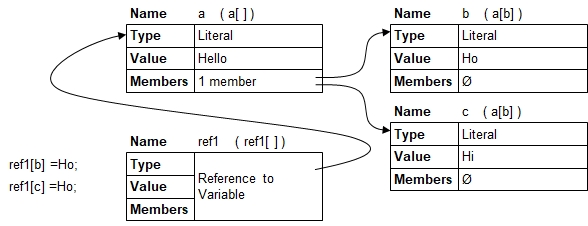

Introduction
Note that the variable name used to establish a reference must either be vacant (no variable defined yet) or just a simple variable containing no members.
This rules is insofar relevant because member (and subname) names and array index numbers specified in the references will be applied on the target variables directly.
The following examples shows a typical through-referencing:

a[] = Hello;
ref1[] =^ a[]; // ref1[] references a[]
ref1[b] = Ho; // Both assignments build members on a[]
a[c] = Hi;
echo( a[b],", ",ref1[b] ); // Ho, Ho
echo( a[c],", ",ref1[c] ); // Hi, HiHo, Ho
Hi, Hi